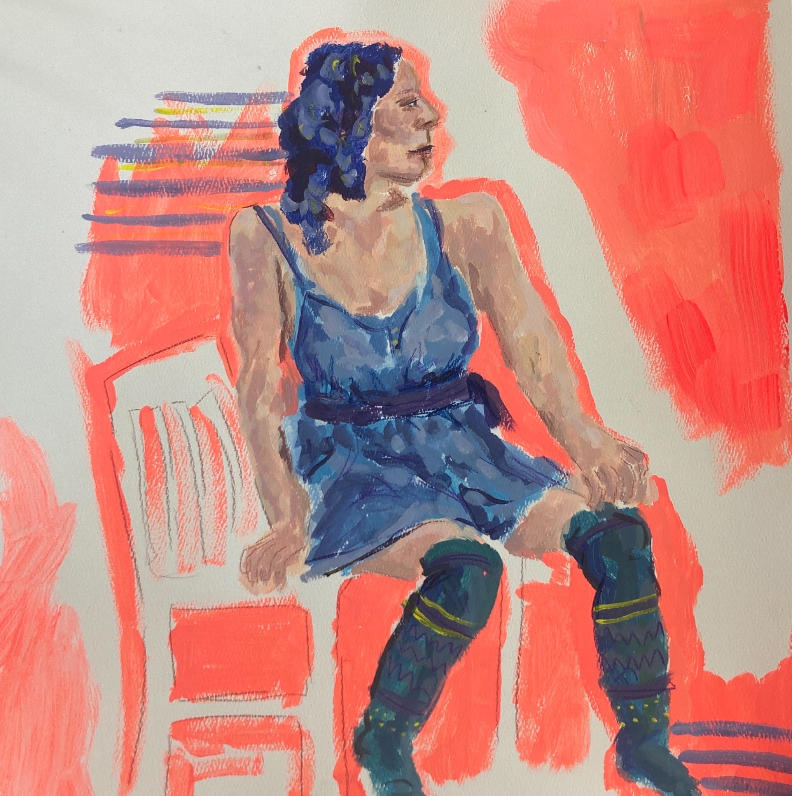
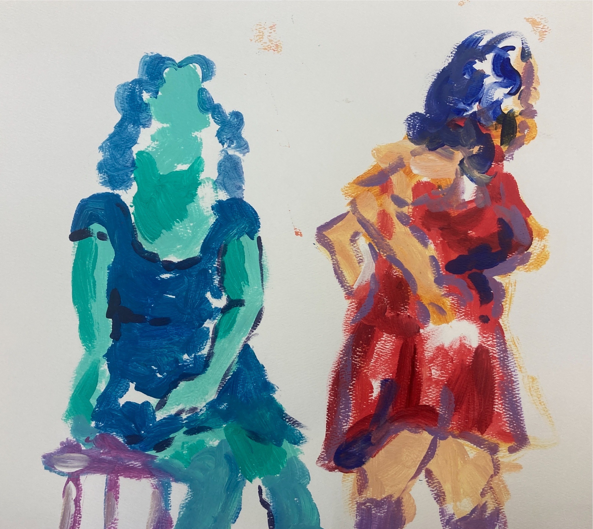

"Luisa" x , Acrylic on paper, 2023
This was an observational painting that I did with acrylic on paper. I struggle with anatomy, especially when it comes to observational paintings but I like how this turned out either way. It was good practice.
 